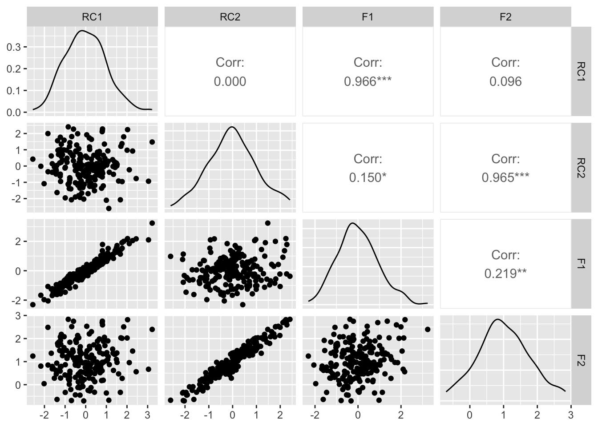

I have been asked a couple of times about the use of rotations in Principal Component Analysis (PCA). Each time it is far enough apart that I forget what I said the previous time, so I have written down what I should say here.
What happens in a PCA
Conceptually, PCA commonly is to summarise the latent variation within a dataset. That is, when we want to measure something that is not directly accessible, a way around that is to ask a number of questions that are measurable and combine them in a way that reflects the underlying thing we do want to measure.
A PCA aims to do this mathematically by measuring the correlation between all pairs of variables, then creating new variables based on those correlations and weights of the original variables through an approach called eigenvalue decomposition. Variables that are similar weight heavily onto the same principle component, and there can one less principle components as there are variables (a.k.a: n - 1). In a standard PCA, which is also described as a varimax rotation1, there are two complimentary constraints to the calculation of weights, first is that the weights should maximise the amount of variance explained by the principle components and second is that principle components should be orthogonal, or perfectly uncorrelated with each other. Under a varimax rotation, an additional step is to alter the weightings by making large weights bigger, and penalize changes to weights that makes loadings similar across variables. This combination priotizes a simpler structure of the Principal components.
In most social sciences, assuming that latent variables are uncorrelated is usually a poor assumption. Most aspects of human behaviour impact each other in some way, and so we often want to relax this assumption, using alternative rotations, such as Promax (PROjection to MAXimise simplicity) and ObliMin (OBLIque MINimum). But, often we do not have a good understanding of how these approaches vary or differ in their approach to measuring latent variables. Let us look at this in a simulated example.
In the simulated example, I start with the end product (two latent factors named F1 and F2), then create four variables from these latent factors (V1, V2, V3, V4). F1 and F2 have a 0.2 correlation that I have imposed, which is a low but not negligible relationship between latent variables. I specify the weights so that V1 and V2 are weighted towards F1 (0.8 and 0.7 respectively), and V3 and V4 are weighted towards F2 (0.8; 0.7), and add some normally distributed noise to those variables. The variables V1-V4 then sit in a data frame df . The correlation matrix between each variable shows us that there is a stronger relationship between V1-2 and V3-4 but there is also some relationship across this divided, which is not an uncommon finding in social datasets.
library(psych)library(ggplot2)library(ggpubr)library(GGally)# --- Step 1: Create example data with clear 2-factor structure ---set.seed(123)n <-200F1 <-rnorm(n)F2 <- F1 *0.2+sqrt(1-0.2^2) +rnorm(n, 0, 0.75)# Variables mainly loading on one factorV1 <-0.8*F1 +0.1*F2 +rnorm(n, 0, 0.2)V2 <-0.7*F1 +0.2*F2 +rnorm(n, 0, 0.2)V3 <-0.1*F1 +0.8*F2 +rnorm(n, 0, 0.2)V4 <-0.2*F1 +0.7*F2 +rnorm(n, 0, 0.2)df <-data.frame(V1, V2, V3, V4)round(cor(df), 2)
As mentioned in the description, PCA is based off of a correlation matrix, which is created below in the object R, but you can also put the data frame directly into the function principal. Doing the latter means you will be returned values for each observation in the data frame that reflect the principal components (which is usually what researchers are after).
Loadings:
RC1 RC2
V1 0.962 0.210
V2 0.919 0.344
V3 0.173 0.963
V4 0.385 0.891
RC1 RC2
SS loadings 1.947 1.883
Proportion Var 0.487 0.471
Cumulative Var 0.487 0.957
plot_df =data.frame(pc_varimax$scores, F1 , F2)ggpairs(plot_df)

Looking at the loadings for the variables on the principle components the loadings are matching up about as well as we could hope. V1 and V2 load heavily onto RC1 and V2 and V4 on RC2.
are all loaded on PC1, which is not what we think we should see, and that V1-V2 and V3-V4 are linked to PC2 in opposite directions. This is a common outcome for standard/varimax PCA, where the restriction of orthogonality means that variables load onto multiple principle components in a strange and unintuitive way, despite the rotation trying to minimize this possibility. We can see the uncorrelated nature of the variables in the plot below, and a correlation value of ~0. What we can be sure of in this approach is that the principle components are independent latent variables, however, in social and human behavioral research, it is more often that latent factors are related in some way - both conceptually and numerically.
As such, we can use different rotations that make adjustments to PCA that relax the orthogonality assumption in order to get more interpretable factors. Two common alternative rotations to varimax used in social research is the ProMax and ObliMin rotations.
ProMax
Promax is an extention of the varimax rotation, that begins with the varimax output and raises the loadings to a power (in addition to the square-square change performed by varimax) . By raising the loadings to a power, the strong loadings become larger and the weak loadings get closer to zero. The effect of this change is that each variable weights more strongly onto each latent variable, and exaggerates the patterns seen in the latent variable. This more significant change to the loadings also makes the latent components correlated, unlike varimax components.
Loadings:
RC1 RC2
V1 0.962 0.210
V2 0.919 0.344
V3 0.173 0.963
V4 0.385 0.891
RC1 RC2
SS loadings 1.947 1.883
Proportion Var 0.487 0.471
Cumulative Var 0.487 0.957
The exaggeration of weightings performed by the ProMax rotation sees our variables split across the two principal components in a way that our simulated example might
Numerically, PCA is derived from a correlation matrix. That is, for each variable you are interested in, calculate how they are correlated to each other and put them into a square matri.
Assuming that we have a standardized (the mean is zero for all variables) Principle component analysis are derived from the covariance of the variables in the matrix. Let’s take a small example, using data from the R package languageR. We are going to use the datatset ‘english’. This data set gives mean visual lexical decision latencies and word naming latencies to 2284 monomorphemic English nouns and verbs, averaged for old and young subjects, with various pre- dictor variables. For each word, there is an average latency value for an Old and Young participant. I choose this datatset only because I see that it has been used for PCA before. Specifically the variables
Footnotes
It is also possible to perform no rotations in PCA, but this is not common and varimax is a common default approach. For example, vairmax is the default option in psych::principal↩︎